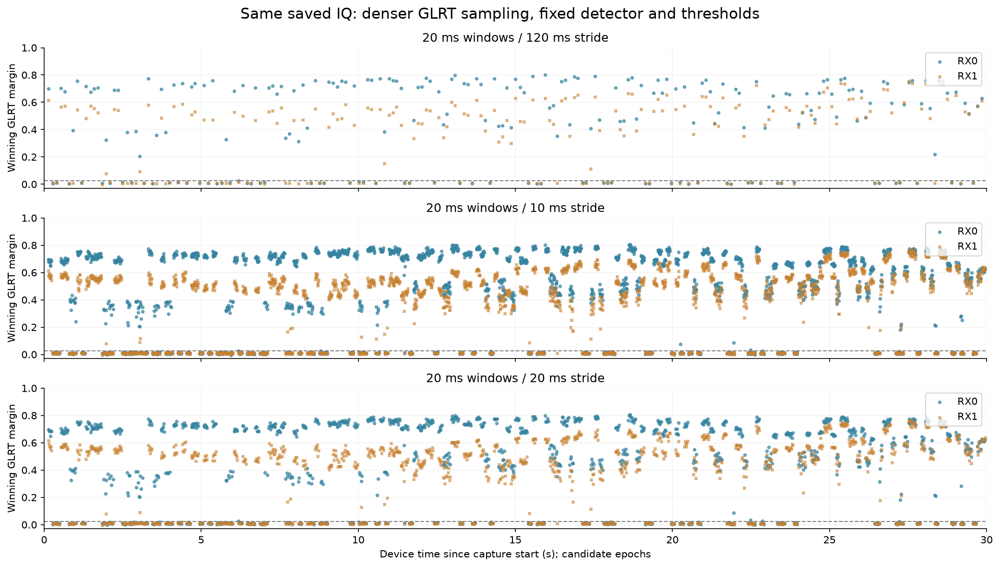
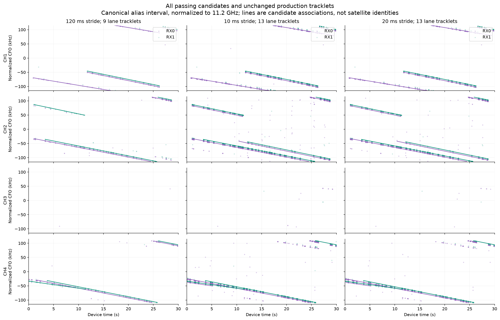
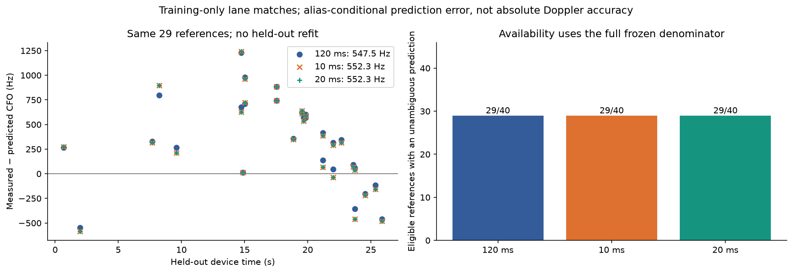

GLRT density pilot — first 30 seconds
Research comparison, not a production analysis product. All windows are 20 ms. Held-out errors are alias-conditional CFO prediction errors; no satellite identity or absolute Doppler accuracy is claimed.
glrt-response.png

cfo-tracks.png

heldout-rms.png

See README.md, scores.json and runtime.json for exclusions, coverage, and cost.